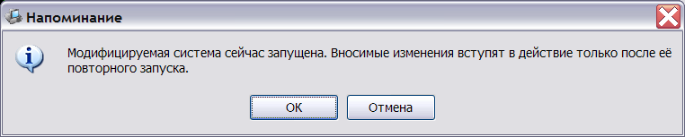
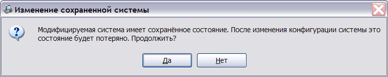
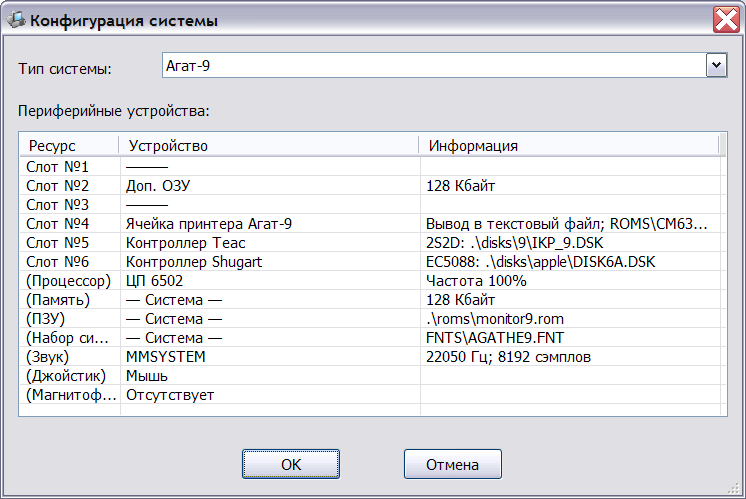

Для изменения конфигурации необходимо выбрать систему в списке систем главного окна эмулятора, а затем нажать кнопку "Изменить".
В случае, если модифицируемая система в настоящий момент запущена, на экран выдаётся предупреждение:

Если же для выбранной системы присутствует сохранённая конфигурация, выдаётся окно предупреждения:

В случае подтверждения модификации, при сохранении изменённой системы, её сохранённое состояние будет удалено, поскольку сохранённое состояние должно соответствовать конфигурации системы.
Далее на экране появляется окно конфигурации системы, отображающее текущие настройки выбранной системы:

Изменение конфигурации существующей системы полностью аналогично конфигурированию новой системы, поэтому отдельно рассматриваться не будет.
После нажатия кнопки "ОК" изменённая конфигурация автоматически сохраняется на жёстком диске. Нажатие кнопки "Отмена" оставляет предыдущую конфигурацию без изменений.
См. также: Создание новой конфигурации, Главное окно эмулятора, Главное меню